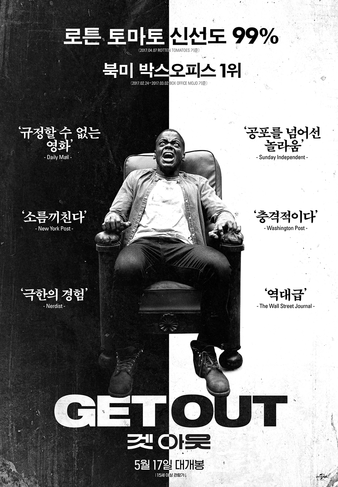

Getout

크리스와 로즈는 사귀는 사이, 로즈의 집에 차를 타고 가게 된다.
로즈가 운전을 하고 가는데 사슴 한 마리가 튀어나와서 사고를 당하게 된다.
경찰이 오고 로즈가 운전을 했지만 크리스의 신분증을 요구하고 로즈는 인종차별이라며 신분증 요구를 거부하라고 한다.
경찰은 그렇게 돌아가고 로즈의 집에 도착하게 된다.
크리스는 로즈의 부모님인 딘과 미시에게 집 구경을 하게 되고 미시는 최면술사라는 걸 알게 된다.
밤이 되고 크리스는 잠이 오지 않아 밖으로 나가는데 이상한 모습들을 보게되고 미시에게 최면술을 받게 된다.
시간이 지나고 로즈의 집에서 파티가 열리게 되는데 크리스는 직업이 사진작가라서 사진을 찍기 시작한다.
파티에 참석한 거의 모든 사람이 백인이었는데 한 흑인을 보고 크리스는 반가워서 인사를 나누게 된다.
하지만 무언가 이상함을 느낀다.
로즈의 집에 있을수록 뭔가 이상한 느낌을 받는 크리스는 로즈에게 집에서 나가자고 한다.
로즈도 집을 떠나자고 말하게 되고 밤에 이들은 집에서 나가기 위해 짐을 쌌다.
크리스는 그렇게 집을 나가는 줄 알고 있었는데 미시의 최면에 걸리게 되고 로즈의 가족들에게 납치당하게 되는데..